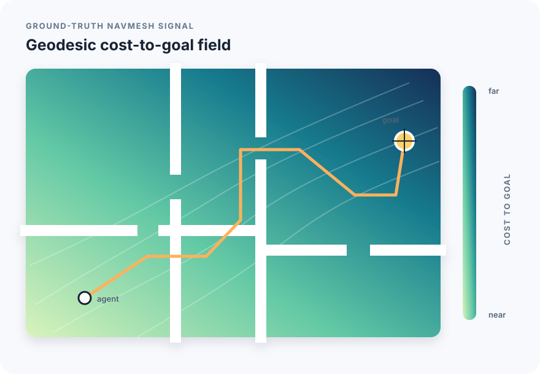
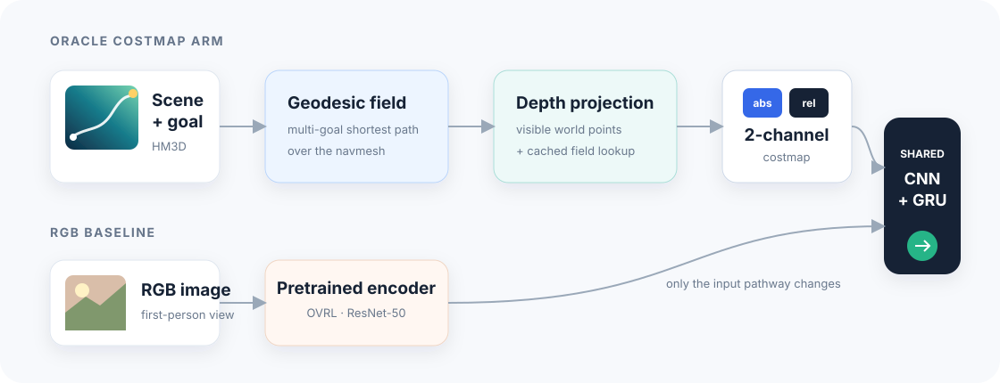
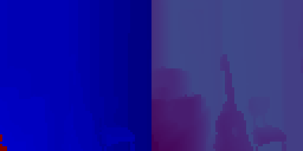
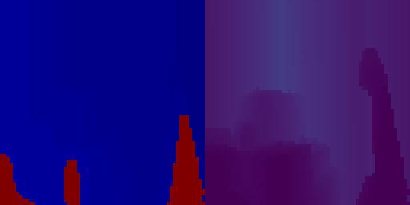
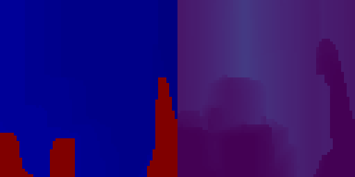
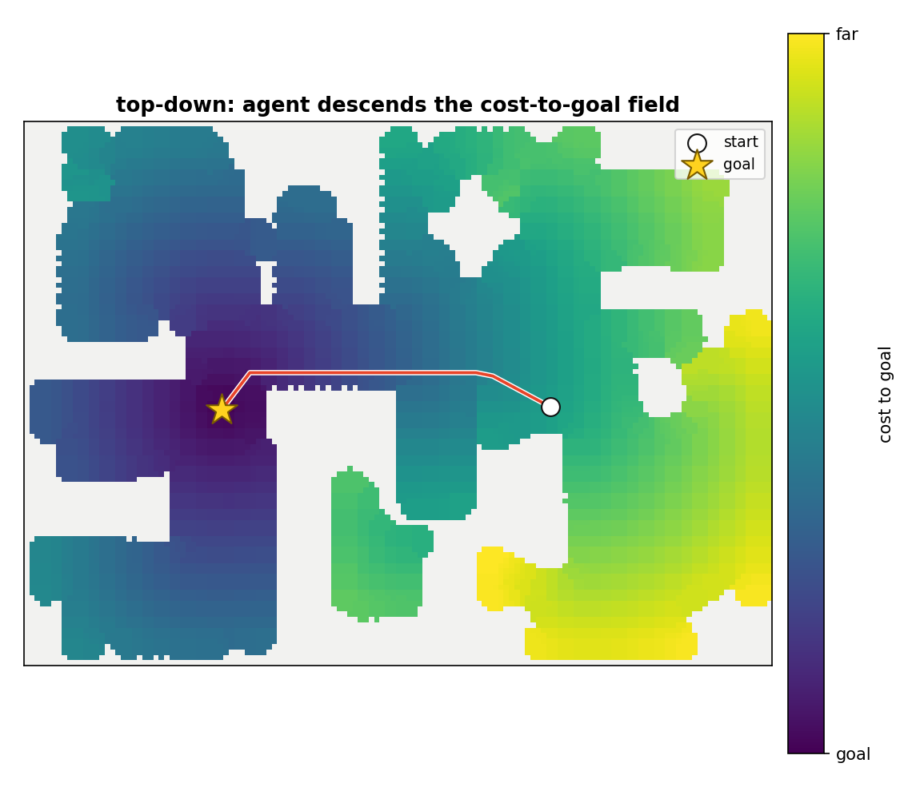

From geodesic field to policy input
The agent does not receive a global map. It sees an egocentric projection of oracle cost-to-goal values through the same limited depth camera used at inference.
Field constructionAn online sensor computes the ground-truth geodesic distance from every navigable grid point to the nearest goal (one multi-goal shortest-path query per grid point over the navmesh; KD-tree lookup; cached per scene+category; validated against offline GT to MAE 0.06–0.10 m).
Per-step observationEach step, depth pixels are back-projected into world coordinates and looked up in the field, producing a 2D costmap aligned with the agent’s current view.


The 2-channel fix. A naïve 1-channel costmap (globally scaled) left the within-frame gradient spanning only ~4% of the input range — the from-scratch encoder ignored it and the policy collapsed to the action-prior floor. The fix is a 2-channel transform: channel 0 = absolute cost (“how far is the goal” → the STOP cue), channel 1 = per-frame contrast-stretched cost (“which way is downhill” → the steering cue).



The costmap in action
Rollouts on four unseen HM3D houses. In each panel: the agent's first-person view (left) and the live cost-to-goal costmap over that view (right) — dark marks the direction toward the goal, and the agent simply glides down the geodesic field until it arrives.


